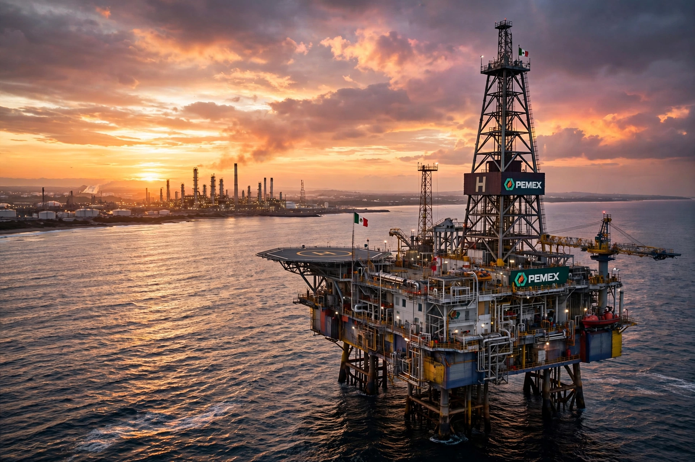

The petroleum industry in Mexico makes Mexico one of the world's significant producers of crude oil. The state-owned company Pemex (Petróleos Mexicanos) long held a constitutional monopoly over exploration, production, refining, and distribution, and oil revenue has historically been a major pillar of the federal budget.

| Key company | Pemex |
|---|---|
| Major fields | Cantarell, Ku-Maloob-Zaap, Abkatún–Pol–Chuc |
| Key region | Bay of Campeche; Tampico–Misantla; Burgos Basin |
| Nationalization | March 18, 1938 |
Commercial oil production began in the early 20th century around Tampico, and by the 1920s Mexico was the world's second-largest producer, with fields operated mainly by American and British companies. On March 18, 1938, President Lázaro Cárdenas expropriated the foreign oil companies after a labor dispute, creating Pemex — an act commemorated annually as Oil Expropriation Day.
The giant Cantarell Field in the Bay of Campeche, discovered in 1976, transformed Mexico into a major exporter; at its peak in 2004 it produced over 2 million barrels per day, among the highest rates ever achieved by a single field. Its decline — driven by falling reservoir pressure despite massive nitrogen injection — pulled national output down from a 2004 peak of about 3.4 million barrels per day. The Ku-Maloob-Zaap complex later became the country's largest producer.
Constitutional reforms in 2013–2014 under President Enrique Peña Nieto ended Pemex's monopoly, opening upstream blocks to private and foreign companies through licensing rounds. The administration of Andrés Manuel López Obrador after 2018 reversed course, favoring Pemex, halting new rounds, and building the Dos Bocas (Olmeca) refinery to reduce gasoline imports. Pemex remains one of the world's most indebted oil companies, carrying around $100 billion in financial debt.
See also: Pemex · Mexican oil expropriation · Cantarell Field